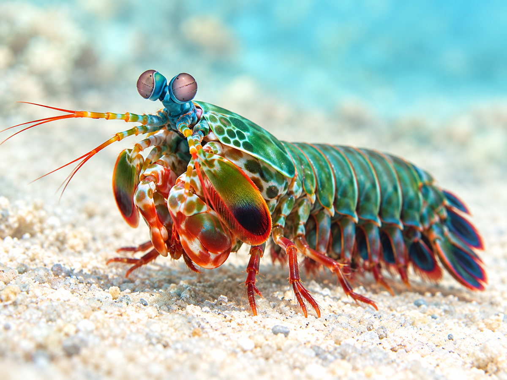
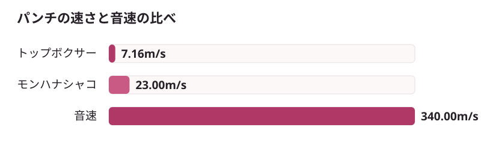
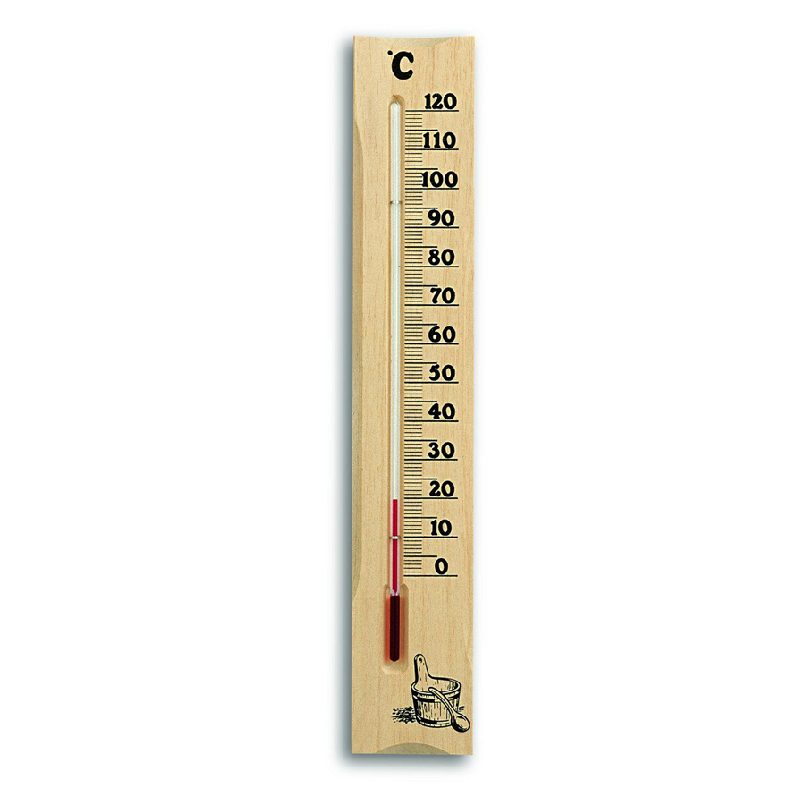
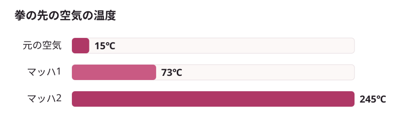
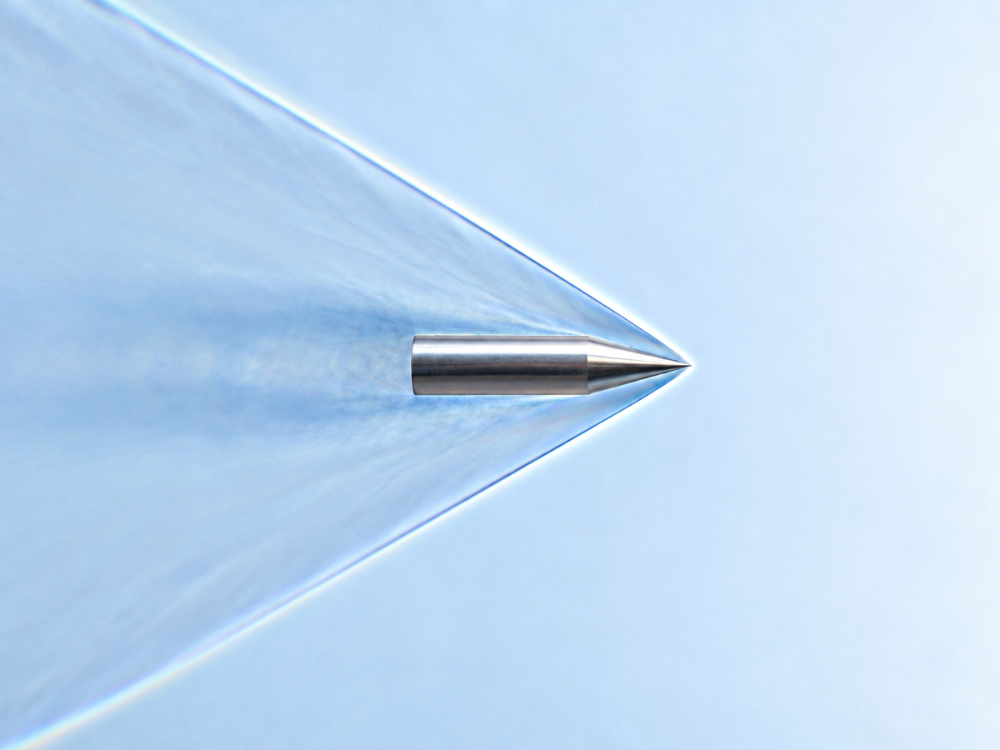
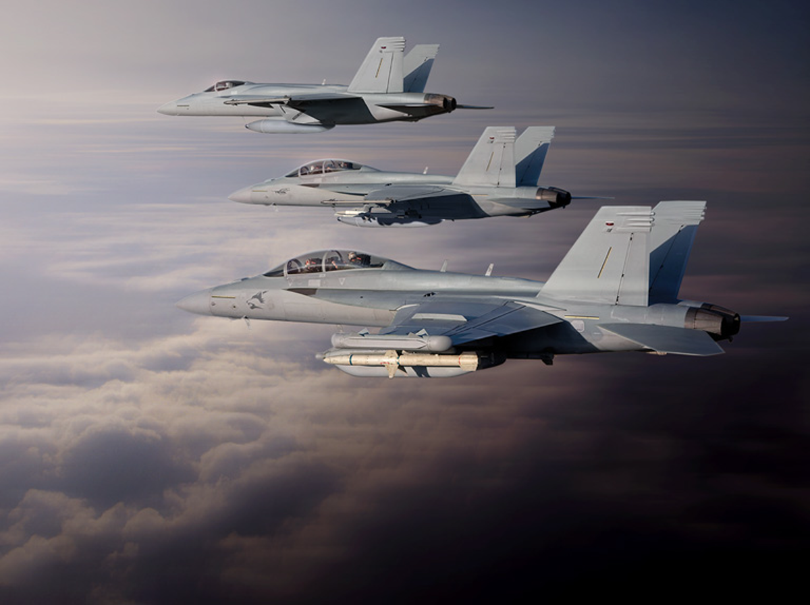
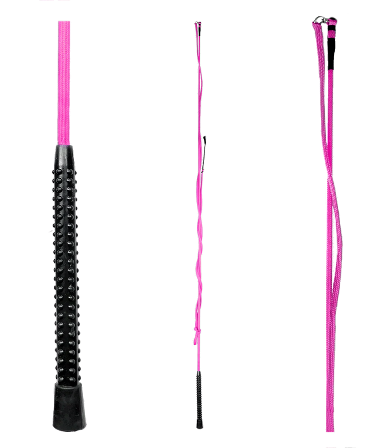
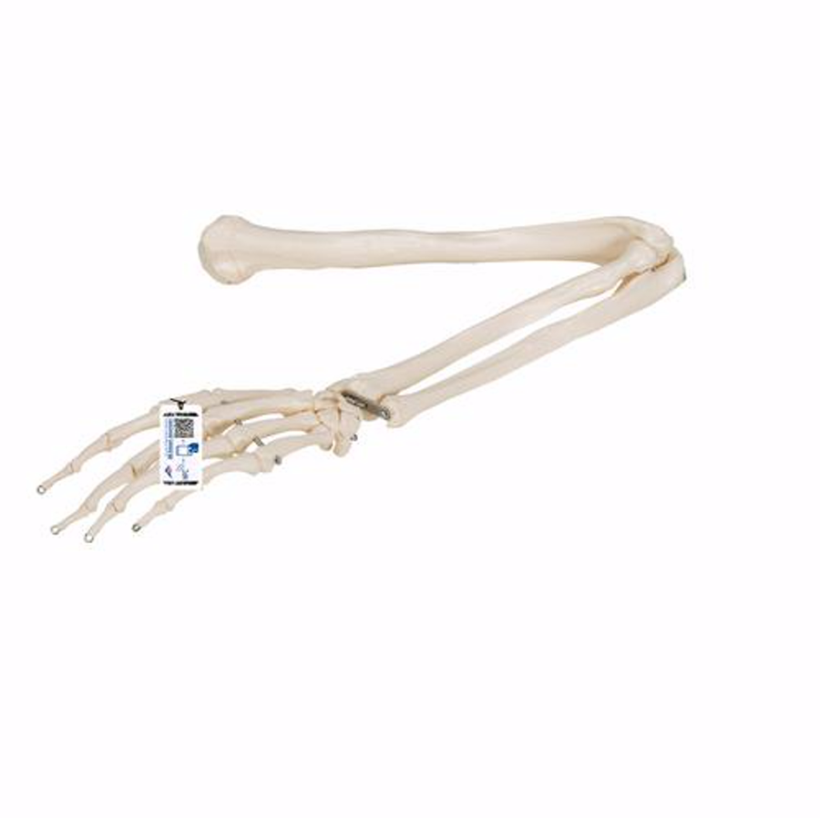
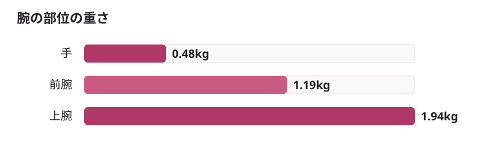
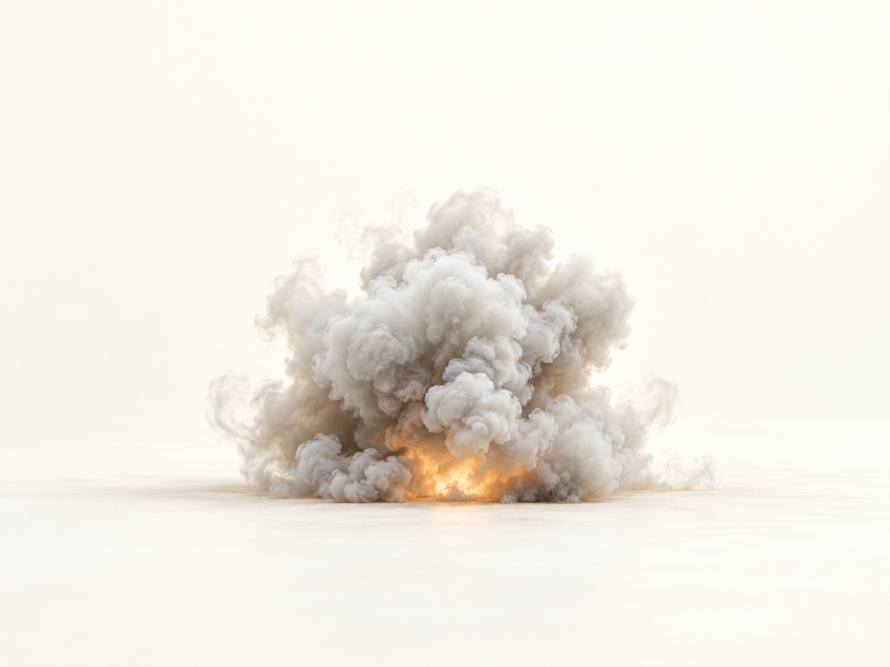

A PAGE FROM THE NOTEBOOK
【空想科学】音を置き去りにするとどうなる？【HUNTER×HUNTER】
#物理#人体#音速#パンチ#ハンターハンターIN THIS NOTE
この記事でわかること
音速の拳は現実のパンチの何倍か
まず「音を置き去りにする」の基準を決めます。NASAによると、音の速さは気温で変わります。海面の標準的な日で毎秒約1,100フィート（約335m/s）、時速761マイル（約340m/s）です。ここでは15℃ほどの地上で約340m/sとします。山の上や寒い日には少し遅くなるので、ネテロの修行場所によって目標の速さは数%変わります。
実際のパンチはどれくらいか。2022年に発表された中国の研究では、上海の競技学校のボクサー16人のリードストレートを測りました。全国レベル以上の選手は最大7.162m/s、当たる瞬間は5.557m/s、最大の力は約1,508Nでした。下のクラスの選手は最大6.317m/s、約1,035Nです。音速をトップ選手の最大値で割ると約47倍です（計算）。これが「音を置き去り」に必要な差です。
動物で最速級とされるパンチと比べても差は大きいです。2004年にカリフォルニア大学バークレー校が発表したモンハナシャコの打撃は最大23m/s（時速約83km）で、加速度は重力の6,300〜8,000倍でした。トップボクサーの3倍以上の速さですが、それでも音速の約7%にすぎません。生き物の手足が空気中で音速に届いた例は、今回の調べでは見つかりませんでした。


作中の設定と数字も確かめます。ネテロは46歳で「祈ってから突く」流れを1日1万回と決めました。最初は1回5〜6秒、全部で18時間かかりましたが、のちに1万回を1時間でこなせるようになります。記事の計算では1回あたり0.36秒です。ただし、拳を70cm動かすだけなら音速で約0.002秒です（推定）。0.36秒のほとんどは「整える・拝む・祈る・構える」の時間です。つまり「1万回を1時間」という数字自体は、拳が音速をこえた証拠にはなりません。体の動き全体が速くなったことを表していると読めます。
拳の前で空気に起きること
NASAの区分では、マッハ数（速さ÷音速）が1に近い「遷音速」で、空気が押し縮められる効果が急に大きくなります。1〜3の「超音速」では、形と速さによって衝撃波ができます。人のパンチ（マッハ約0.02）の周りの空気は、ほぼ押し縮められない流れとして扱えます。音速の拳では、空気をよけて流すのが間に合いません。拳の前に空気が積み重なり、圧力の壁ができます。
空気から受ける押し返しを見積もります。空気の密度を1.225kg/m³とすると、340m/sの「動圧」は約7万Pa、大気圧の約7割です（計算）。拳の正面を約9cm角（約0.008m²）、抵抗の係数を遷音速で1〜1.5とすると、抵抗はおよそ600〜850Nです（推定）。トップボクサーのパンチの最大の力約1,508Nの4〜6割にあたります。ほんの一瞬とはいえ、空気そのものが拳を押し戻す力になります。
熱はどうか。NASAの式では、流れが止まる点の温度（よどみ点温度）は、元の温度×(1＋0.2×マッハ数²)です。15℃（288K）の空気にマッハ1でぶつかると約346K、約73℃になります。マッハ2なら約245℃です（計算）。拳の先の空気は、熱いサウナくらいの温度になります。ただ、音速で動くのは数ミリ秒です。皮ふが焼けるほどの熱が伝わる時間はなさそうです（推測）。NASAも、空気の熱が大問題になるのはマッハ3〜5以上としています。


「音を置き去り」という言葉にも物理の注意点があります。ちょうどマッハ1では、拳が出す音の波は拳と同じ速さで進み、拳の前に重なります。相手には、拳と音の波がほぼ同時に届きます。音をはっきり後ろに残すには、マッハ1を少しこえる必要があります。これは音速の区分と衝撃波のでき方から考えた推論で、作中の「念」の力はこの計算に入っていません。

ソニックブームはまわりを壊すか
音速をこえた物は衝撃波を引きずり、地上では「ドン」というソニックブームになります。NASAは2016年7月、エドワーズ空軍基地の砂漠でF-18を20回飛ばし、超音速での通過を69回測りました（2017年発表）。多くの通過は高度32,000フィート・マッハ1.4で、ブームの標準値は大気圧より約1.6ポンド/平方フィート（約77Pa）高いだけでした。一部の地点では、尖った形の7ポンド/平方フィート（約335Pa）をこえる波が記録されています。大気圧（約10万Pa）と比べると、標準値で約0.08%、尖った波でも約0.3%の差です（計算）。

身近な「音速の音」の例はムチです。2002年にサイエンティフィック・アメリカンが紹介したアリゾナ大学の研究では、ムチの音は先端から出るのではありませんでした。ムチを伝わる輪（ループ）が音速に達したときのソニックブームだったのです。計算では、先端は最初の速さの30倍以上になりうるとされています。人が腕で振る道具でも、途中で何十倍にも速さを上げれば音速に届く。ムチはその実例です。

この例からは限界も見えます。アリゾナ大学の研究が示すのは、ムチという道具が音を出す仕組みです。人の拳そのものが音速に届くことを示すものではありません。腕の部位の平均質量をまとめたデータによると拳と前腕だけでも約1.7kgあり、これを同じ速さにするのはまったく別の問題です（推論）。
拳ほどの物が出すブームの強さは、今回の資料では数字にできませんでした。理由は三つあります。第一に、手元にある実測値は、高度約1万mを飛び続ける戦闘機のものです。第二に、拳は数十cmの間を数ミリ秒だけ超音速で動きます。第三に、拳ほどの大きさで、すぐ近くで測った資料が見つかりませんでした（推論）。言えるのは、近くの人の耳に鋭い破裂音が届くだろうということまでです。窓や建物を壊すほどの力はないと考えます（推測）。まわりへの被害で大きいのは、ブームより、当たった瞬間に出るエネルギーのほうです。これは次の議題で数字にします。
音速の加速と衝撃に体は耐えるか
まず、どの重さを動かすかを決めます。体の部位の重さの資料（平均体重73.87kg）では、手が約0.48kg、前腕が約1.19kg、上腕が約1.94kgです。突きでいちばん速く動くのは拳で、前腕がそれに近い速さで続きます。肩に近い上腕はずっと遅いので、ここでは「手だけ（約0.48kg）」を下限、「手＋前腕（約1.67kg）」を上限の目安にします（仮定）。なお、ボクシング研究でいう「有効質量」は当たる瞬間に相手へ効く重さです。体重を乗せるかどうかで変わり、加速させる腕の重さとは別物なので、ここでは使いません。


エネルギーは速さの2乗で増えます。手＋前腕がトップボクサーの最大7.162m/sで動くと約43Jです。同じ重さで340m/sにすると約9.6万J、約2,300倍になります。手だけなら約2.8万Jです（計算）。爆薬のTNT1kg＝約418万Jという一般的な換算を使うと、TNT約7〜23g分になります。相手に当たれば、殴るというより小さな爆発に近い現象です。

加速の大変さも見積もります。構えから約0.5mで0から340m/sまで速めるには、平均で約11万6千m/s²、重力の約1万2千倍（約1万2千G）が要ります。押す力は、手だけで約5.5万N（約5.7トン分）、手＋前腕で約19万N（約20トン分）です（計算）。この加速度は、モンハナシャコの打撃の6,300〜8,000Gの1.5〜1.9倍です。ただしシャコは、数cmほどの小さな脚にためたバネの力を一気に放つ動物です。人の腕とは大きさも仕組みも違うので、「人の腕に、最速級の動物の脚をこえる加速をかける」という目安として見てください。
限界もはっきりさせておきます。動かす重さの幅、加速の距離、拳の大きさは仮定で、条件しだいで数字は数倍変わります。筋肉が縮む速さや骨・関節の強さの資料も、今回は調べきれていません。それでも、空気の抵抗（数百N）や熱（約70℃）より、加速に要る力（数万〜十数万N）とエネルギー（数万J）の桁がずっと大きいという結論は変わりません。ふつうの人の体のままなら、腕が先に壊れると考えるのが自然です（推測）。
結論
音速はトップボクサーの拳の約47倍。拳と前腕約1.7kgを音速にすると約9.6万Jで約2300倍、0.5mでの加速は約1万2千G・約20トン分。空気より先に腕が持たない。
見解
調べて分かった事実：音速は約340m/sで、トップボクサーのストレートの最大7.162m/sの約47倍です。捕食者の打撃で最速級とされるモンハナシャコでも23m/sです。ムチの音は、ムチを伝わるループが音速に達して出ます。マッハ1.4の戦闘機のブームでも、地上の圧力の差は標準で約77Paほどです。
ここからの見解：「音を置き去り」の壁は、空気より体の側にあると考えます。空気の抵抗は数百N、拳の前の熱は約70℃（計算）で、ミリ秒の出来事なら耐えられそうです。一方、手と前腕（約1.7kg）を0.5mで音速にするには、約1万2千G・約20トン分の力が要ります。エネルギーは約9.6万Jです（計算）。人の筋肉と骨の仕組みでは届かない桁です。また、作中の「1万回を1時間」は1回0.36秒で、ほとんどは祈りの動きです。拳の速さを示す数字ではありません。ネテロの拳は、ムチのような道具の工夫でも説明できません。物理だけでは届かない部分を「念」が埋めていると読むのが筋だと思います（推測）。